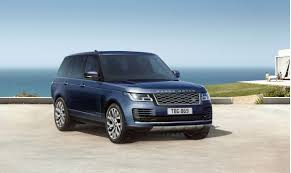

Ranger Rover  VIDEO
5 Motivos Para Comprar uma Range Rover
Designer. Com um design mais esportivo e uma postura mais imponente potente, a Range Rover Sport foi projetado para causar impacto:
Performance,
Tecnologia,
Versatilidade,
Capacidade.
Lincoln navigator VIDEO
A Lincoln deixou claro em mais de uma ocasião que o Navigator é um de seus pilares centrais. A conhecida marca de luxo da Ford destaca que mais da metade das vendas geradas por este SUV de grande tamanho corresponde a clientes novos para a marca. Ou seja, compradores que provêm de outras marcas automobilísticas. É por isso que o Lincoln Navigator é um verdadeiro sucesso comercial.
Outro dos fatores determinantes que tornam o Lincoln Navigator um modelo fundamental para a marca americana é que 9 de cada 10 compradores optam por um dos acabamentos mais exclusivos. Com o objetivo de seguir lidando em um nicho de mercado tão elitista, a Lincoln apresentou a linha 2020 do Navigator. A oferta é melhorada de maneira notável com interessantes novidades.
O pacote de sistemas de assistência à condução Lincoln Co-Pilot 360 ganha protagonismo. Tecnologias como a detecção de pontos cegos, alerta à colisão frontal com detecção de pedestres e o assistente de luzes de estrada são alguns dos sistemas incluídos. Outra das novidades que aterrissam na linha Navigator é o sistema "Phone As A Key" que permite abrir ou fechar e dar a partida no carro com o telefone móvel. Esta tecnologia estreou no Lincoln Aviator.
BMw VIDEO
O BMW X7 apresenta atualmente três opções de motores. Seja qual for a versão que escolher, a caixa automática de oito velocidades e a tração nas quatro rodas estão incluídas.
Além das motorizações a gasolina, a BMW disponibiliza também o seu X7 com um motor a diesel: o M50d. Igualmente potente, mas mais económico que os anteriores, este X7 vem com 294 kW e 400 cavalos que o fazem atingir os 100km/h em apenas 5,4 segundos.
Mercedes VIDEO
A inicial será o GLS 450, com um 3.0 turbo de seis cilindros, produzindo 366 cv e 50,9 kgfm de torque. Logo acima estará o GLS 580, equipado com o 4.0 V8 biturbo com o sistema híbrido-leve EQ Boost, gerando respeitáveis 489 cv e 71,2 kgfm. Ambos trabalhar com a transmissão automática de 9 marchas e sistema 4Matic de tração integral. Isso faz com que acelerem de 0 a 96 km/h em 5,9 segundos e 5,2 segundos, respectivamente, com velocidade máxima limitada a 209 km/h.
A inicial será o GLS 450, com um 3.0 turbo de seis cilindros, produzindo 366 cv e 50,9 kgfm de torque. Logo acima estará o GLS 580, equipado com o 4.0 V8 biturbo com o sistema híbrido-leve EQ Boost, gerando respeitáveis 489 cv e 71,2 kgfm. Ambos trabalhar com a transmissão automática de 9 marchas e sistema 4Matic de tração integral. Isso faz com que acelerem de 0 a 96 km/h em 5,9 segundos e 5,2 segundos, respectivamente, com velocidade máxima limitada a 209 km/h.
Porsche VIDEO
O SUV ficou 7 cm maior e 9 milímetros mais baixo, realçando o aspecto esportivo. No design, o modelo recebeu elementos de outros carros da Porsche. Na dianteira, por exemplo, passou a ter capô mais robusto e faróis ovalados, característica que remete ao clássico 911.
O motor 3.0 V6 entrega 345 cv de potência. O 2.9 V6 rende 446 cv e o poderoso 4.0 V8 é capaz de gerar 550 cv. Em comum, todas as versões têm câmbio automático Tiptronic S de oito velocidades e tração integral permanente.
Cadillac-escalade VIDEO
Pela primeira vez na história do Escalade, o SUV gigantesco traz como opção motorização diesel. O 3.0 seis cilindros em linha traz 281 cv e 63,5 kgfm de torque. Há ainda opções tradicionais a gasolina como o V7 6.2 de 426 v e os mesmos 63,5 kgfm do modelo diesel.
A Cadillac também trouxe ao gigantesco SUV navegador GPS de realidade aumentada, mostrando imagens da rua obtidas pela câmera frontal com indicações de qual rua virar. Além disso se o motorista precisar virar para a direita apenas os alto-falantes da direta operam avisando para o lado a ser virado.
Além disso, o novo Escalade traz sistema de visão noturna com detecção de pedestres e animais grandes e sistema de controle eletrônico de trailer. Para o entretenimento de quem senta atrás o SUV da Cadillac carrega duas telas de 12,6 polegadas com entrada HDMI e espelhamento de celulares Android.